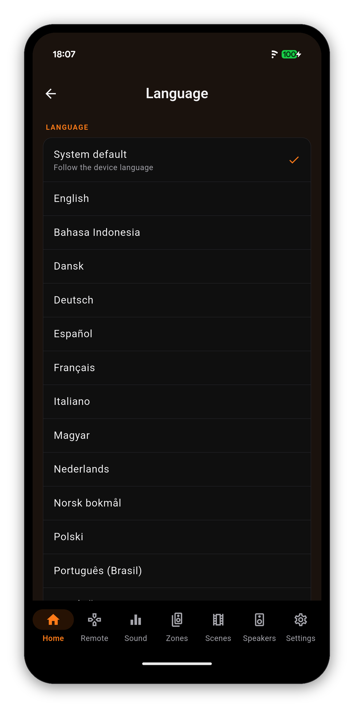
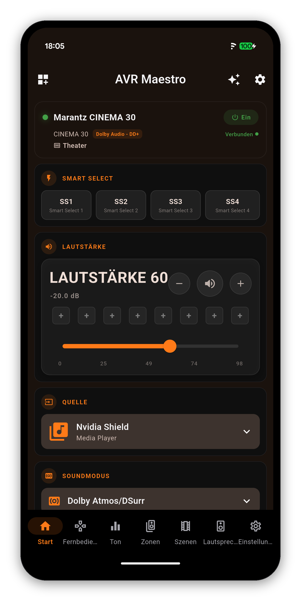
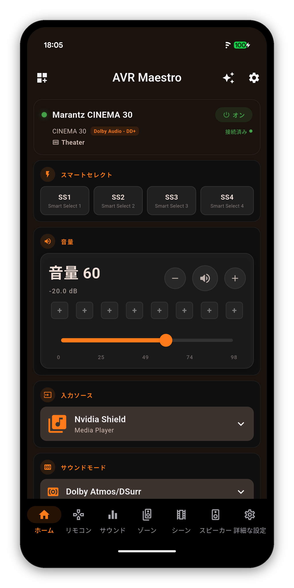
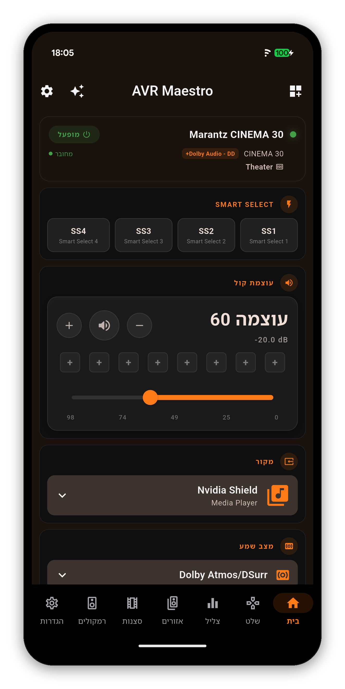
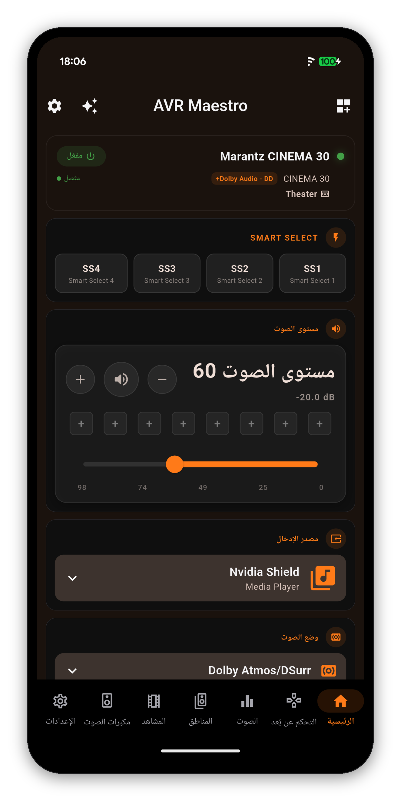
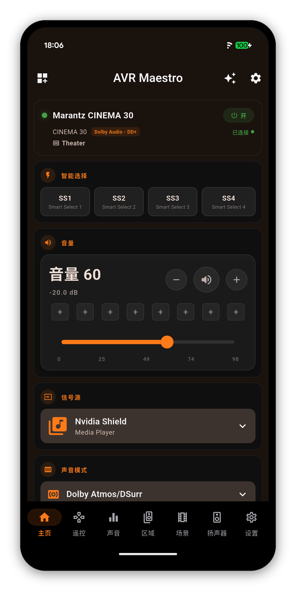
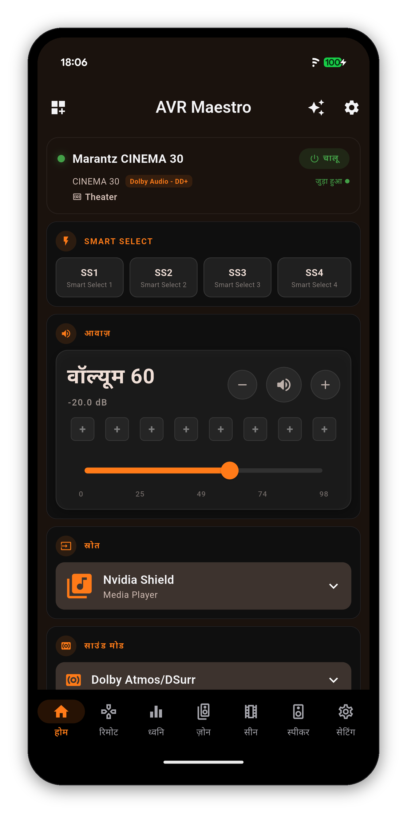
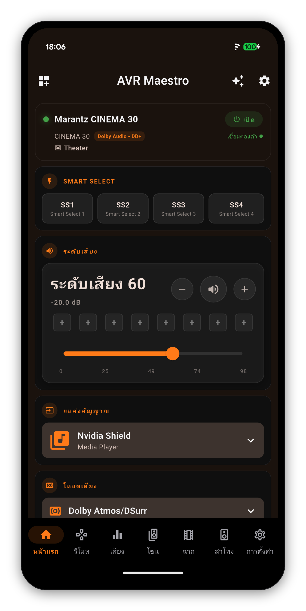
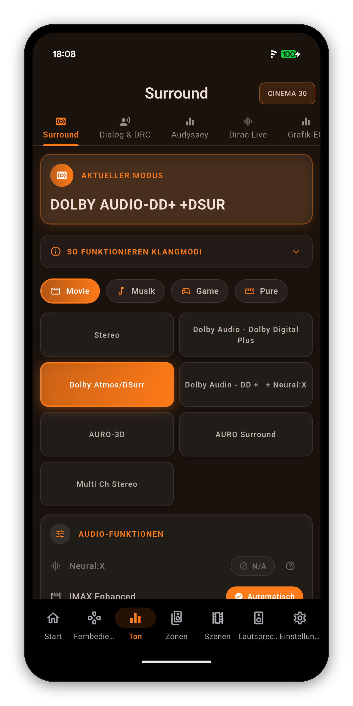
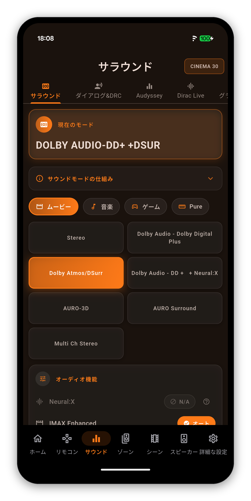

Every screen, every setting, every dialog - in your language. The app follows your device out of the box, or you pick one in Settings. Hebrew and Arabic mirror the whole layout. The official Denon and Marantz app ships 10 of these languages; 18 are AVR Maestro's alone.
Open Settings and tap Language. System default follows the device; below it every language is listed under its own name, so you can find yours without reading another one first. The choice applies at once, survives a restart, and travels with Backup & Restore.
Hebrew and Arabic turn the whole app around: navigation, cards, lists and sliders mirror, while every dB and volume readout still reads left to right inside them.

One Marantz CINEMA 30, one Home screen, seven languages. What the receiver says - the input, the sound mode, Smart Select - stays exactly as the receiver says it.

German
Japanese
Hebrew, right to left
Arabic, right to left
Simplified Chinese
Hindi
ThaiThe Sound tab in German and Japanese. The tabs, labels and explanations are translated; the sound modes and every value read off the receiver are the receiver's own words.


The official Denon and Marantz app ships German, Spanish, French, Italian, Japanese, Dutch, Polish, Russian, Swedish and Simplified Chinese. AVR Maestro ships those and eighteen more.
| Language | In the app | Official app |
|---|---|---|
| Arabic | العربية | AVR Maestro only |
| Chinese (Simplified) | 简体中文 | Both |
| Chinese (Traditional) | 繁體中文 | AVR Maestro only |
| Czech | Čeština | AVR Maestro only |
| Danish | Dansk | AVR Maestro only |
| Dutch | Nederlands | Both |
| English | English | Both |
| Finnish | Suomi | AVR Maestro only |
| French | Français | Both |
| German | Deutsch | Both |
| Greek | Ελληνικά | AVR Maestro only |
| Hebrew | עברית | AVR Maestro only |
| Hindi | हिन्दी | AVR Maestro only |
| Hungarian | Magyar | AVR Maestro only |
| Indonesian | Bahasa Indonesia | AVR Maestro only |
| Italian | Italiano | Both |
| Japanese | 日本語 | Both |
| Korean | 한국어 | AVR Maestro only |
| Norwegian | Norsk bokmål | AVR Maestro only |
| Polish | Polski | Both |
| Portuguese (Portugal) | Português | AVR Maestro only |
| Portuguese (Brazil) | Português (Brasil) | AVR Maestro only |
| Romanian | Română | AVR Maestro only |
| Russian | Русский | Both |
| Spanish | Español | Both |
| Swedish | Svenska | Both |
| Thai | ไทย | AVR Maestro only |
| Turkish | Türkçe | AVR Maestro only |
| Ukrainian | Українська | AVR Maestro only |
| Vietnamese | Tiếng Việt | AVR Maestro only |
One-time purchase, no ads, no subscriptions. Connect in under a minute.